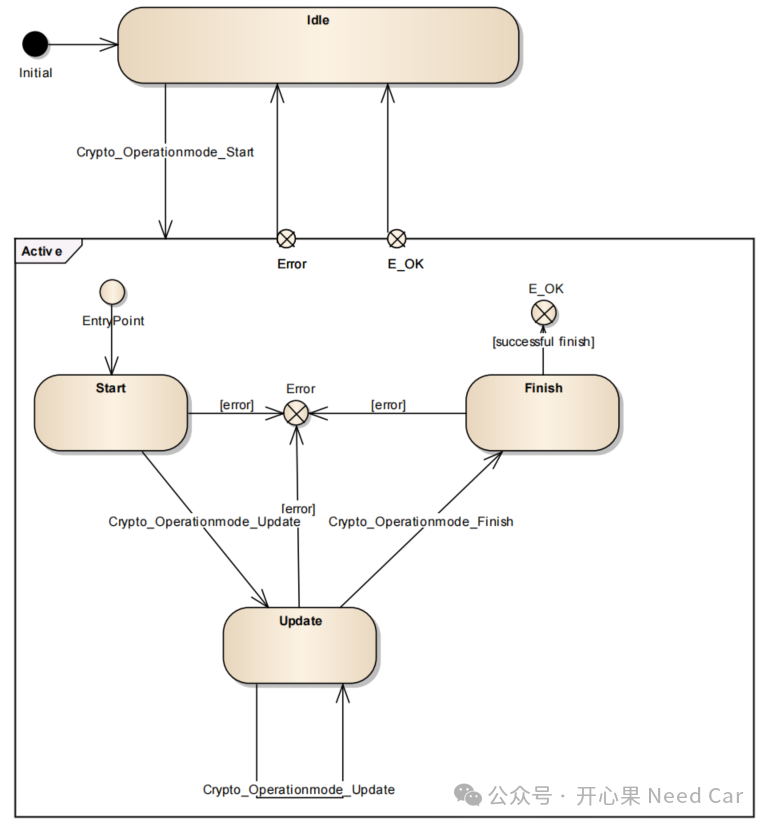
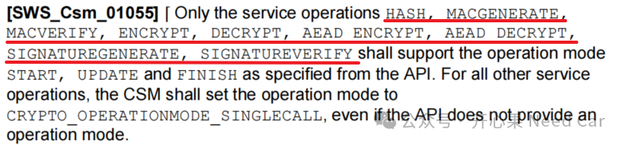
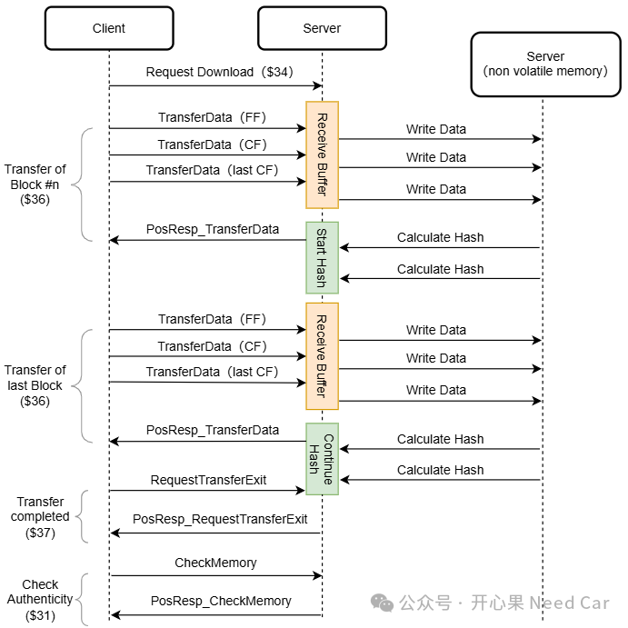

开心果 Need Car · 2024-12-04T08:10:00+08:00 · 微信原文
熟悉CP Autosar信息安全的小伙伴应该知道，对于信息安全服务，主要指CSM（Crypto Service Manager）发起的服务请求。单次服务请求即可以使用单步操作模式，即：CRYPTO_OPERATIONMODE_SINGLECALL。也可以将单次服务请求拆分成多步模式处理，即：“Start”, “Update”, “Finish”。
工程使用中，多数场景，信息安全的服务请求都可以使用单步模式（CRYPTO_OPERATIONMODE_SINGLECALL）。既然服务请求可以单步模式完成，那么，为什么需要拆分成多步模式呢？到底哪个场景，服务请求需要分步处理呢？
1、单次请求的多模式处理
参考Specification of Crypto Service Manager.pdf规范。信息安全服务请求的多模式处理，如下所示：

服务请求中，使用CRYPTO_OPERATIONMODE_SINGLECALL模式时，一次请求会连续的完成如上三个模式动作。那么，有哪些服务请求可以进行分步处理呢？按照规范要求，可以分布处理的服务请求如下：

2、单个服务多模式处理的工程场景
如果生硬的理解服务的多模式，会有些费解。这里我们可以聚焦到一个工程场景：软件刷写过程中，边接收数据边计算hash的工况，这个动作可以称为Pre-calculate Hash，也就是hash的提前计算。
在软件升级过程中，为了加速软件升级的效率，除了硬件限制外（eg：CAN 500Kbps通信速率，该因素无法优化刷写效率），我们会尽可能的在软件层面思考：是否还有提高刷写效率的地方。所以，这里就不得不提软件完整性检查（Check Memory）的效率，eg：计算更新程序的hash，确认软件的完整性。
软件体量不大的情况下，等到所有的软件刷写到Flash以后，最后计算Hash值进行软件完整性校验是可行的。但是，如果刷写的软件体量过大，将会增加计算软件hash的时间。所以，如果可以在升级软件的过程中就并行的计算Hash，当软件刷写完成，Hash也计算完成，这样就能很快的告知上位机软件的完整性，而不必等待。所以，在实现这个目标的过程中，Hash的计算就可分步完成。
具体示例：
$34（Request Download service），下载新的APP数据，此时可以进行Hash的START模式；
$36（Transfer Data service），传输数据，Server每接收一次数据，写入非易失内存以后，进行一次Hash的UPDATE操作；
$37（Request Transfer Exit service），数据传输退出时，Hash计算完成；
$31（Routine Control service），例程控制时，直接将内存完整性结果反馈给上位机，完成校验，而不必等待。
如上过程，示意如下：

往期精彩回顾